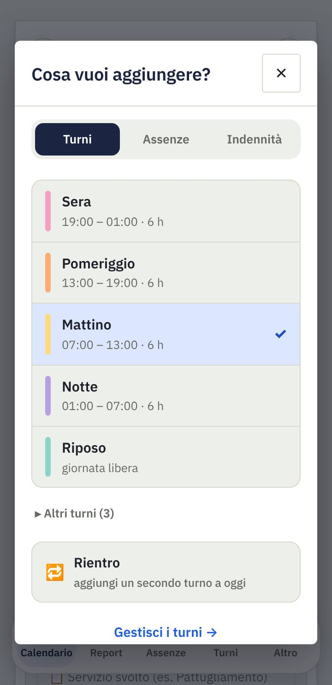
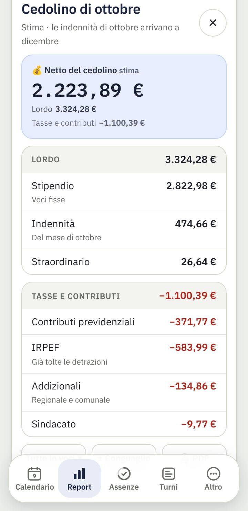
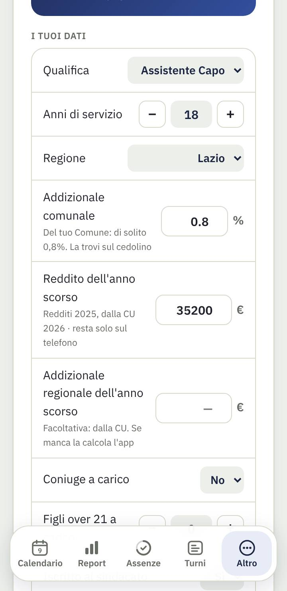

Come si usa l'app, passo per passo · aggiornata alla versione 3.4
1. Primi passi
Al primo avvio l'app ti accompagna in 5 passi:
Chi sei: qualifica, anni di servizio, regione, addizionale comunale (0,8% se non la sai), coniuge e figli over 21 a carico, sindacato con la quota al mese e, se vuoi, il reddito dell'anno scorso. Servono per stimare stipendio e tasse.
Come lavori: scegli la tua turnazione (es. Turno in quinta) e cosa fai oggi. L'app riempie i prossimi 3 mesi.
Quanto ti resta: congedo ordinario diviso per anno, recuperi e riposo compensativo, come risultano all'ufficio.
Come la vuoi: tema chiaro o scuro, promemoria e widget (all'inizio sono spenti).
Tutto pronto: un riepilogo di quello che hai scelto.
💡 Il reddito dell'anno scorso (dalla CU) è facoltativo e resta solo sul telefono. Se lo scrivi, detrazioni e addizionali vengono come nel cedolino NoiPA. Tutto si cambia poi in Altro → Anagrafica.
2. Calendario
Tocca un giorno per vederlo sotto il calendario; toccalo di nuovo per cambiare il turno.
Nella finestra "Cosa vuoi aggiungere?" scegli un turno, un'assenza o un'indennità. "Rientro" aggiunge un secondo turno nello stesso giorno.
Modifica apre il giorno completo (vedi il capitolo successivo).
＋ Evento aggiunge visite, corsi, appuntamenti, anche ripetuti, con promemoria.
I giorni del mese prima e dopo si vedono sbiaditi, per capire come continua la turnazione.
Le caselle
Ogni casella mostra il turno (Sera, Pom., Notte…) e, se c'è, l'evento. Le indennità del giorno le vedi toccando il giorno, scritte per esteso nel riquadro sotto il calendario (per esempio "2 buoni pasto"), e nell'agenda.
Agenda sotto il calendario
In Altro → Agenda sotto il calendario puoi far comparire, sotto il mese, i prossimi 14 giorni in elenco: turno, orario, ore, indennità ed eventi, con il totale delle ore di ogni settimana.
3. Il giorno e le indennità
Con Modifica si apre la scheda del giorno. In alto scegli Turno, Riposo o Assenza.
Turno: scegli un tuo modello o scrivi inizio e fine. Sotto vedi subito come vengono divise le ore (diurne, notturne, festive).
Indennità: tocca quelle del giorno. Alcune chiedono un dato in più (ore di missione, ordine pubblico in sede o fuori sede).
Straordinario: scrivi le ore e se sono prima o dopo il turno; l'orario esatto è facoltativo. Con "Mettilo a riposo compensativo" non va in paga ma diventa ore di riposo in Assenze.
Altro: rientro (secondo turno), permesso breve e recupero del permesso breve, con gli orari.
Un giorno segnato come assenza non dà nessuna indennità, anche se era rimasta spuntata.

Come vengono contate
Voce
Quando spetta nell'app
Turno notturno
In automatico, per ogni ora lavorata tra le 22 e le 6.
Presenza festiva
In automatico, se lavori di domenica o in un giorno festivo. Nei festivi del calendario (es. Natale, 2 giugno, Pasquetta) c'è un'indennità in più.
Controllo del territorio
Se la spunti e fai almeno 3 ore nella fascia serale (18–22) o notturna (22–6). Vale la fascia dove fai più ore; a parità, serale. Non si somma all'ordine pubblico: con tutti e due non viene calcolato.
Ordine pubblico
Turni di almeno 4 ore. Importo diverso in sede o fuori sede; fuori sede senza pernottamento è ridotto.
Servizio esterno
Turni di almeno 3 ore. Se nello stesso turno c'è anche l'ordine pubblico, si paga solo l'ordine pubblico.
Missione
Sulle ore di missione: niente fino a 4 ore, tariffa piena da 4 a 8 ore, ridotta oltre le 8. Il rimborso dei pasti su ricevuta non è calcolato.
Reperibilità
Un importo per ogni giorno segnato.
Cambio turno
Un importo per ogni cambio, pagato a luglio dell'anno dopo insieme alla produttività collettiva. Nel Report vedi quanti ne hai nell'anno e quanto varranno.
Lavorato sul riposo
L'indennità e un giorno di Recupero riposo in Assenze.
Lavorato in festivo
Un giorno di Recupero festivo in Assenze.
Buono pasto
Solo quanti, senza importo: nel Report, "fuori busta paga". Se in un giorno sono 2, in "Modifica il giorno" scegli 2.
Straordinario
Tariffa oraria della tua qualifica: diurna, notturna o festiva, notturna e festiva.
Gli importi sono quelli delle tabelle ufficiali. La produttività collettiva arriva una volta l'anno, a luglio, in base ai giorni di presenza dell'anno prima.
4. Turni
Turni automatici
In Turni → Genera turni automaticamente:
scegli la sequenza (o creane una tua con i tuoi turni);
indica cosa fai il primo giorno;
premi Genera: l'app riempie i giorni fino alla data scelta. Ferie e assenze già inserite non vengono toccate.
Quando la sequenza sta per finire, l'app te lo ricorda: con Continua la sequenza riparte dal giorno giusto senza sfasare il ciclo.
I tuoi modelli di turno
In Turni → I tuoi turni trovi i modelli (es. 07–13, 19–24) con orario, nome e colore. Tocca un modello per cambiarlo o creane uno nuovo. Se cambi l'orario di un modello, l'app chiede cosa aggiornare:
da oggi in poi: i turni passati restano come sono;
tutti, anche il passato;
solo i turni che inserirò: il calendario non cambia.
In Colori e stile calendario scegli i colori dei turni e lo stile Classico o Moderno.
Esportare in Google Calendar
Turni → Esporta in Google Calendar: scegli il mese visualizzato, i prossimi 3 mesi o tutto l'anno, e se includere riposi e assenze.
Salva il file (o mandalo a te stesso per email).
Dal computer apri calendar.google.com → ⚙️ Impostazioni → Importa ed esporta → Importa, e scegli il file. I turni compaiono anche sul telefono.
💡 Prima crea un calendario a parte chiamato "Turni" e importa lì: se cambi turnazione, lo cancelli e lo rifai senza toccare il resto. Se ti arriva un'email prima di ogni turno, la manda Google Calendar: si toglie dalle "Notifiche evento" di quel calendario.
5. Report
In alto: quanto arriva sul conto nel mese, con stipendio, indennità e tasse. Con ‹ › cambi mese.
Il mese: turni, riposi, ore, straordinario e le indennità con lordo e netto.
In fondo: buoni pasto, Cedolino stimato e Statistiche dell'anno. Si aprono toccando la loro riga.
Con Personalizza in alto scegli quali di queste parti vedere.
⚠️ È una stima. Il netto vero può essere diverso di qualche euro: arretrati, conguagli, rimborsi del 730. Confronta sempre con il cedolino ufficiale.
Lo stipendio arriva il mese dopo quello lavorato; indennità e straordinari due mesi dopo (quelli di settembre a novembre). La tredicesima arriva a dicembre. Il Report lo tiene già in conto.
Cedolino stimato
In alto il netto, sotto Lordo (stipendio, indennità, straordinario) e Tasse e contributi voce per voce.
Tutte le voci mostra il dettaglio: stipendio tabellare, indennità una per una, IRPEF lorda e detrazioni. L'app si ricorda la tua scelta.
± Conguaglio aggiunge o toglie un importo al netto del mese (per esempio un rimborso 730); PDF lo stampa.
Detrazioni e addizionali si calcolano come NoiPA, sul reddito dell'anno scorso: le addizionali in 9 rate da marzo a novembre. Le aliquote regionali si aggiornano ogni mese dai file del Ministero.

6. Assenze
In alto i Giorni di partenza, con Modifica.
Ogni voce su una riga, con il suo colore: quanto rimane su quanto spetta. L'anello è pieno quando è tutta da usare e si svuota man mano; grigio per le voci a 0. Il congedo ordinario mostra anche i giorni di ogni anno.
Tocca una voce per i dettagli e per cambiare quanto spetta.
Per usare un'assenza: nel calendario tocca il giorno → Assenza → scegli quale.
Saldi di partenza
L'app non può sapere quanti giorni avevi prima di usarla. Con Inserisci i saldi di partenza (o Modifica) scrivi:
il congedo ordinario per anno (es. 2026: 37, 2025: 15, 2024: 3): si usano prima i giorni più vecchi e non scadono;
i recuperi riposo e festivo ancora da fare;
le ore di riposo compensativo accumulate.
Da quel giorno conta l'app: toglie i giorni che segni in calendario e a gennaio aggiunge quelli dell'anno nuovo.
Quanto spetta
I numeri di partenza qui sotto si cambiano nella scheda di ogni voce: controlla il congedo ordinario, perché dipende dalla tua situazione (anni di servizio, settimana su 5 o 6 giorni). Il numero che scrivi è quello che l'app aggiunge ogni gennaio.
Voce
Come la conta l'app
Congedo ordinario
Giorni all'anno (di partenza 30). Gli avanzi degli anni prima restano e si usano per primi.
Ore all'anno (di partenza 54). Si segna dentro il turno, con l'orario: quelle ore si tolgono dalle ore lavorate. Recuperarle non fa risalire il saldo: serve a non perdere la paga di quelle ore.
Ore di studio, permesso sindacale
Ore all'anno.
Recupero riposo / festivo
Automatici: +1 per ogni giorno "Lavorato sul riposo" o "Lavorato in festivo", −1 quando li usi.
Riposo compensativo
Ore automatiche: salgono con lo straordinario messo a riposo, scendono quando lo usi indicando l'orario del turno sostituito.
Con Nuova assenza in alto (o ＋ Aggiungi un'assenza tua in fondo) crei una voce tua: poi nella sua scheda le dai nome e quanto spetta.
7. Altro
Anagrafica: qualifica (con il distintivo del grado), anni, regione, addizionale comunale, famiglia, sindacato con la quota al mese; facoltativi il reddito e l'addizionale regionale dell'anno scorso (dalla CU). Se manca qualcosa che serve, il Report te lo dice.
Tabelle ufficiali: stipendi, indennità e aliquote usati nei calcoli. Si aggiornano da sole dal sito (vedi Tabelle economiche), le addizionali regionali ogni mese dal Ministero. Con Modifica i valori a mano le cambi tu: il valore cambiato si vede in blu, con ↺ torni a quello ufficiale.
Backup: nella sua pagina, sul telefono e su Google Drive.
Tema e colore (Auto, Luce, Chiaro, Grigio, Nero) dell'app.
Guida all'app: apre questa pagina.
Segnala un problema o un'idea: apre l'email già scritta, con versione e telefono.
Anagrafica
I dati che servono al netto. In particolare:
Addizionale comunale: parte da 0,8% (il valore più comune); scrivi quella del tuo Comune, la trovi sul cedolino.
Reddito dell'anno scorso e addizionale regionale dell'anno scorso: li trovi sulla CU. Facoltativi: senza, l'app li stima. Da giugno, se il reddito è di due anni prima, l'app ti ricorda di aggiornarlo con la CU nuova.
Iscritto al sindacato: con Sì compare la quota al mese, da correggere con quella del cedolino.

Promemoria del turno
In Altro accendi Promemoria del turno (all'inizio è spento).
Scegli La sera prima (e l'ora, es. 20:00) oppure Prima dell'inizio (30 minuti, 1 ora o 2 ore prima).
La prima volta Android chiede il permesso per le notifiche: rispondi Consenti.
Se compare "⚠️ … categoria di notifica spenta" premi Attiva notifiche e accendi Visualizza le notifiche (succede spesso su Xiaomi).
⚠️ Se i promemoria arrivano in ritardo o non arrivano, apri Altro → 🩺 Controllo promemoria: controlla notifiche, categorie di notifica, allarmi e risparmio batteria, con un tasto per sistemare ognuno. Sui telefoni Xiaomi c'è anche l'Avvio automatico da accendere. Con Manda una notifica di prova vedi subito se arriva, anche ad app chiusa.
Widget nella schermata Home
Mostra il turno di oggi e domani senza aprire l'app.
In Altro accendi Widget nella schermata Home.
Premi ＋ Aggiungi alla schermata Home e conferma.
Se non compare: tieni premuto su uno spazio vuoto della schermata Home → Widget → cerca Turni & Accessorio PS → trascinalo dove vuoi.
Backup
I dati stanno solo sul telefono. Se lo perdi o cancelli l'app senza backup, non si possono recuperare.
Backup sul telefono (gratis):
Altro → Backup → 💾 Esporta backup: crea un file con tutti i dati.
Il file finisce di solito in Download, sullo stesso telefono: spostalo al sicuro (Google Drive, email a te stesso…).
Per rimetterlo: 📥 Importa e scegli il file. Se hai sbagliato, ↩️ Annulla ripristino torna a com'era prima.
Backup su Google Drive (acquisto unico di 1,99 €):
In Altro → Backup premi Attiva e completa l'acquisto su Google Play.
☁️ Salva su Drive: la prima volta scegli il tuo account Google.
Spunta Salva automaticamente ogni 3 giorni per non pensarci più. Su Drive restano fino a 5 copie.
Sul telefono nuovo: 📥 Ripristina da Drive e scegli la copia.
8. Domande frequenti
Ho cambiato telefono: come recupero i dati?
Sul telefono vecchio: Altro → Backup → Esporta backup e manda il file sul telefono nuovo (oppure usa il backup su Google Drive). Sul telefono nuovo installa l'app e usa Importa (o Ripristina da Drive).
Perché il netto non è uguale alla mia busta paga?
L'app fa una stima con le tabelle ufficiali. Per avvicinarla al cedolino: in Anagrafica scrivi il reddito e l'addizionale regionale dell'anno scorso (dalla CU), l'addizionale comunale e la quota sindacale. Arretrati, conguagli di fine anno e rimborsi del 730 restano fuori: li puoi aggiungere con ± Conguaglio nel cedolino.
Non vedo l'indennità di controllo del territorio
Controlla che il turno abbia almeno 3 ore tra le 18 e le 22 o tra le 22 e le 6, e che non ci sia anche l'ordine pubblico. Toccando il giorno la vedi nel riquadro sotto il calendario.
Ho sbagliato i giorni di congedo iniziali
In Assenze tocca Modifica accanto a "Giorni di partenza" e scrivi i numeri che ti dà l'ufficio oggi.
Ho cambiato turnazione
In Turni → Genera turni automaticamente scegli la nuova sequenza e la data da cui parte: i giorni da quella data vengono riscritti, ferie e assenze restano.
Il promemoria non arriva
Controlla che le notifiche dell'app siano permesse e che la batteria dell'app sia "Senza restrizioni" nelle impostazioni di Android.
Su Xiaomi, Redmi e POCO non basta accendere le notifiche dell'app: in Impostazioni → App → Turni & Accessorio PS → Notifiche → Categorie di notifica, apri ogni categoria (Promemoria eventi, Promemoria del turno, Avvisi evento) e accendi Visualizza le notifiche. Se una categoria è spenta l'app te lo dice, e "Attiva notifiche" ti porta direttamente lì.
L'app manda i miei dati da qualche parte?
No. Turni, stipendio e assenze restano sul telefono. L'app scarica solo il file pubblico delle tabelle dal sito, una volta a settimana. Il backup su Drive va solo nel tuo account Google. Vedi l'informativa privacy.
App indipendente, non ufficiale, non affiliata alla Polizia di Stato. Le immagini sono fatte con dati di prova.